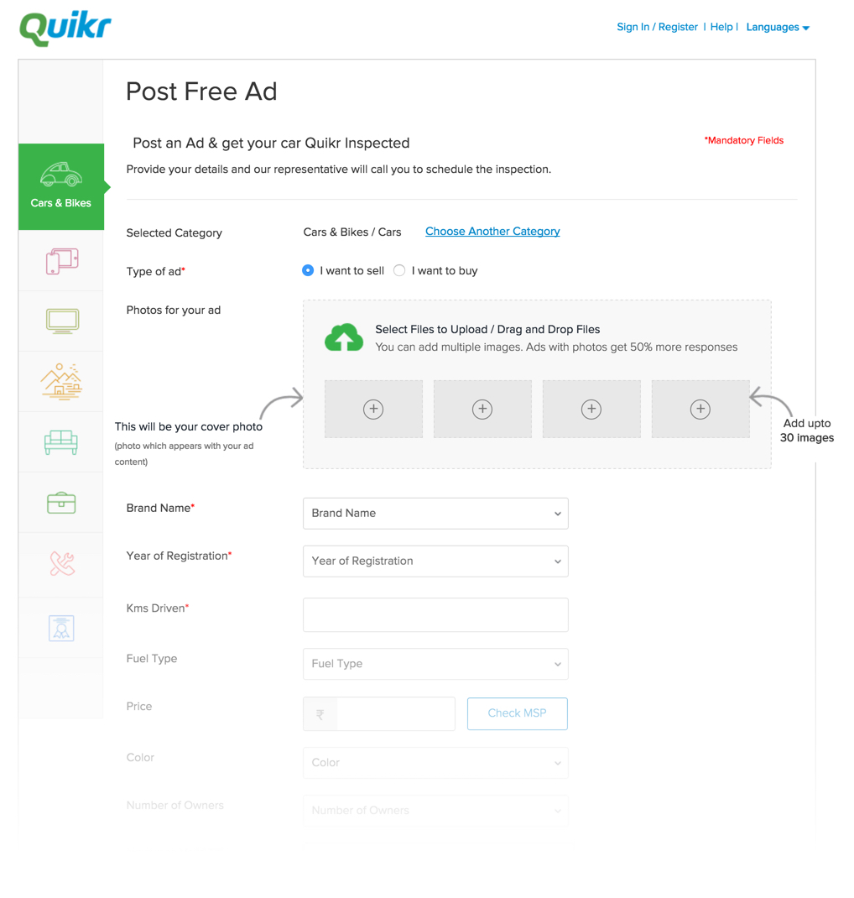
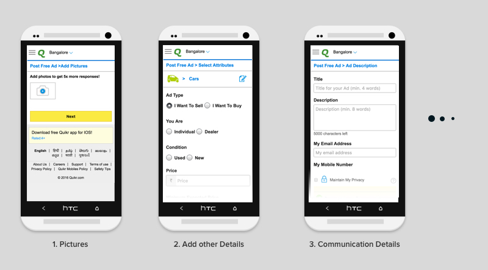

Key features
Mobile privacy was a key issue as per user research

Our post-ad pages are place where user would place their used vehicles on the platform. We currently had a separate desktop and mobile experiences. The process was iterative ones and we did usability test and conducted user interviews in each cycle to come to the best possible solution.
Quikr
UX, Visual design, UI
Sept '15 – Ongoing
www.quikr.com
As mentioned earlier our current Post AD (Flow to list your car to platform) was a generic single page form that catered all categories. And to keep the conversions up most of the fields we non-mandatory which for specfic categories was either crucial or not helpful. As we wanted to maker a better UX for car buyers we wanted to provide hima better information. So the custom form was bloated in the process, also there were some information we didn't need but as they were mandatory we weren't able to remove them.
Our mobile flow was broken in 3 steps: image upload followed by user details and car details
In terms of design the approach was very old, we used dropdown almost everywhere even when there were less than 4 options. Also we had dropdown to select from a list, for example to select a location of your car which was a 70 odd list with no filtering.
The process was too long plus we were asking too many unnecessary questions. In most cases in India if the know the car's brand model one can asecertain the options such as fuel type, transmission (hardly any pre-2005 cars on platform had automatic transmission).
In our initial user research we called up ad posters who faced issuse while posting ad. We also listened to calls of
City wise also there a trend, Metros and bigger towns had users with better bandwidth and users in smaller towns had poor network connection.
Due to better bandwidth the desktop users had higher conversion rates. Our desktop users were mainly posting from their home or office. Also as a significant section were Used Vehicle Dealers, they had posted their vehicles on platform a multiple times and
Mobile privacy was a key issue as per user research
We decided to try a progressive approach where we thought of getting all the critical imformation at once and then ask users to enrich his listing later.